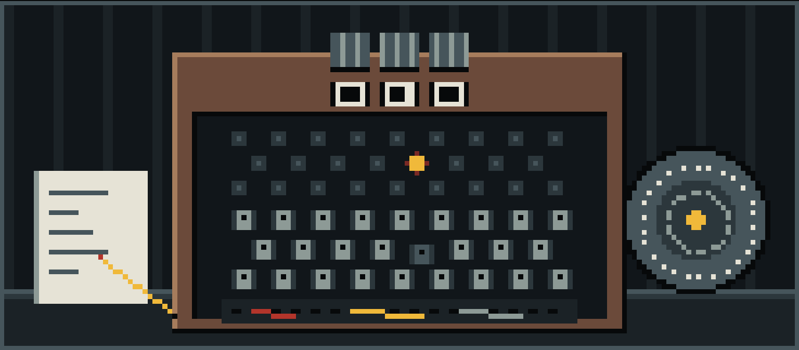

WORLD WAR II · 1939 TO 1944 · ONE OR TWO CLASS PERIODS
Codebreakers: The Hidden War
Students play one of five intelligence roles, crack ciphers, make the hard calls, and see what really happened. Then they trade Signal IDs on Padlet to decode six secret messages, and catch classmates who are secretly double agents.